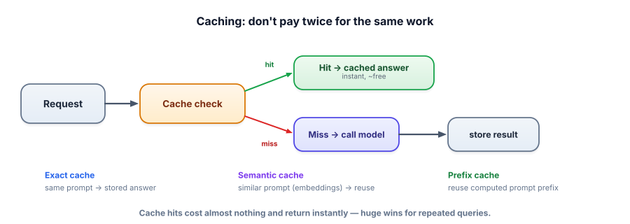

Caching
The fastest, cheapest LLM call is the one you never make. Many production workloads ask the same or similar things over and over — and caching turns those repeats into instant, near-free responses. It’s often the single biggest cost win available.
Why caching is so effective here
LLM calls are unusually expensive (money and latency) and queries are unusually repetitive — the same FAQ, the same document summarized, the same popular question asked a thousand times. Caching stores the result of a call so the next identical (or similar) request returns the stored answer instantly, at no model cost. Because LLM calls cost so much more than a cache lookup, even a modest hit rate pays off enormously.

An exact cache returns a stored answer when the request is identical (same prompt → same answer). A semantic cache matches similar requests using embeddings (Track 1.3): if a new query is close enough to a cached one, reuse the answer. Prompt/prefix caching (a provider/runtime feature) reuses the model’s computation for a shared prompt prefix (like a long fixed system prompt) across requests, cutting prefill cost. The hit rate is the fraction of requests served from cache.
An exact cache is a dictionary; a semantic cache adds an embedding similarity check. Both are a few lines.
import numpy as np
from sentence_transformers import SentenceTransformer
embed = SentenceTransformer("all-MiniLM-L6-v2")
exact = {} # exact cache: prompt -> answer
sem_q, sem_v, sem_a = [], None, [] # semantic cache: queries, vectors, answers
def cached_answer(query, threshold=0.92):
if query in exact: # 1) exact hit → instant, free
return exact[query]
if sem_v is not None: # 2) semantic hit → similar question already answered
qv = embed.encode([query], normalize_embeddings=True)[0]
sims = sem_v @ qv
if sims.max() >= threshold:
return sem_a[int(sims.argmax())]
answer = call_model(query) # 3) miss → pay for it once, then store
exact[query] = answer
store_semantic(query, answer) # append to sem_q/sem_v/sem_a
return answerThe semantic threshold is the key knob: too low and you return a cached answer to a question that’s actually different (a wrong answer); too high and you miss real repeats. Tune it against your data (Track 6).
Cache the wrong things and you serve stale or wrong answers. Don’t cache personalized responses across users (one user could get another’s answer), time-sensitive answers (today’s price), or non-deterministic creative tasks where variety is the point. And set the semantic threshold carefully — a too-loose semantic cache confidently returns a near-miss answer. Cache the stable, shared, repeatable stuff; invalidate when the underlying data changes.
What a cache is worth
Drag the hit rate. Cost and latency both fall, and neither requires a better model, a bigger machine, or a single change to your prompt.
- The cheapest call is one you skip — caching turns repeats into instant, near-free responses.
- Exact cache (identical prompt), semantic cache (similar via embeddings), prefix cache (shared prompt prefix).
- Because LLM calls cost far more than a lookup, even a modest hit rate is a big win.
- The semantic threshold is a correctness knob — too loose serves wrong answers.
- Don’t cache personalized, time-sensitive, or intentionally-varied outputs; invalidate when data changes.
You add a semantic cache with a low similarity threshold to maximize hit rate. Users start getting answers that don’t quite match their questions. What happened?
What's the cheapest possible LLM call?
1. Classify as cacheable or not: (a) “What’s your return policy?”, (b) “Summarize my last order”, (c) “Write a fresh joke”, (d) “What’s the weather now?”.
2. Why does prefix caching specifically help RAG and agents?
3. Your cache hit rate is 60% but the answers are based on docs that change weekly. What must you add?
▸ Show solutions & reasoning
1. (a) cacheable — a stable, shared answer everyone gets. (b) not — personalized; caching across users could leak one user’s data to another. (c) not — variety is the point; a cached joke defeats it. (d) not — time-sensitive; a cached answer goes stale immediately. Cache the stable and shared; never the personal, time-sensitive, or deliberately-varied.
2. RAG and agents tend to send a large, fixed prefix on every call — a long system prompt, instructions, tool definitions — followed by the variable part (the query/step). Prefix caching reuses the model’s computation for that shared prefix instead of re-processing it each time, cutting prefill cost and TTFT. Since these systems make many calls with the same heavy prefix, the savings compound.
3. Cache invalidation tied to the data: when the weekly docs update (re-index), you must expire the affected cached answers (or use a time-to-live so entries auto-expire within the update window). Otherwise your 60% hit rate is 60% potentially-stale answers. A cache without an invalidation strategy trades cost for correctness — define how and when entries die.
In production, caching graduates from an in-memory dictionary to a deliberate layer with policies. You choose a store (an in-process dict for a single server, or Redis/a database for a fleet so all instances share hits), a key (the exact prompt, or a normalized form, plus any relevant context like user-scope or model version — so you don’t mix incompatible results), an invalidation strategy (time-to-live, or event-based eviction when source data changes), and for semantic caches a carefully-tuned threshold validated on real query pairs. Each is a small decision with real correctness consequences, which is why caching is a place senior engineers slow down even though the happy path looks trivial.
The strategic point: caching is frequently the largest single cost lever, precisely because real traffic is far more repetitive than people expect — a long tail of unique queries sits on top of a fat head of common ones. Measure your actual query distribution (Track 6 traces) and you’ll often find a handful of questions account for a big share of volume; caching those alone can slash cost.
Combine exact caching for identical repeats, prefix caching for your fixed system prompt/tools, and a conservative semantic cache for paraphrases, and you can cut both spend and latency substantially with almost no quality risk — provided you respect the boundaries (no personalized/time-sensitive caching, sane invalidation, tuned thresholds). It’s the rare optimization that makes things both cheaper and faster at once.
Caching avoids calls; the next lever makes the calls you do make cheaper by not over-using your most expensive model. Next: model routing.